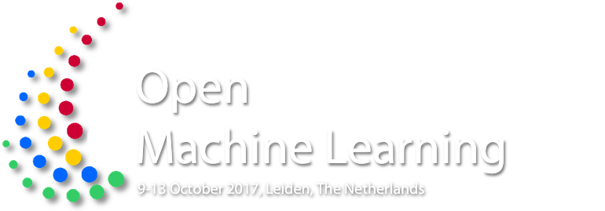

We are dedicated
to creating an open, online ecosystem for machine learning. OpenML is an online platform that automatically organizes data sets, machine learning algorithms, and experiments into a coherent whole, connected to the people who created them. It helps you eliminate drudge work, find interesting data and algorithms more quickly, build on reproducible results, collaborate in real-time online, and become more visible.
More information on OpenML.org.
In a hackathon-style event
participants from many scientific domains present their goals and ideas, and then work on them in small teams for many hours or days at a time. Bring your laptop, learn how to use OpenML in tutorials, and create something great that pushes the scientific community (and yourself) forward. Anything goes, from a cool extension of OpenML itself to solving a data-driven problem in your scientific domain. We also offer tutorials and inspirational invited talks.
Read more Preliminary program.
You are invited
and participation is free of charge. However, places are limited. Please send us a short motivation of what you would love to work on. You are strongly encouraged to participate in the workshop for the whole week. If you need a financial contribution to your travel expenses, please indicate this in your application. We may be able to assist a limited number of students.
For any further questions, don't hesitate to contact us.
We can't wait to see you there!
The venue Lorentz Center @ Oort is located at the Science Faculty Campus of Leiden University, the Netherlands. Besides meeting facilities, the Lorentz center provides each participant with office space and wireless internet access, as well as special rates at a nearby hotel, visa assistance and bike rental. The Lorentz Center does not charge registration fees, and hosts a welcome reception and a workshop dinner free of charge.
Generously funded by